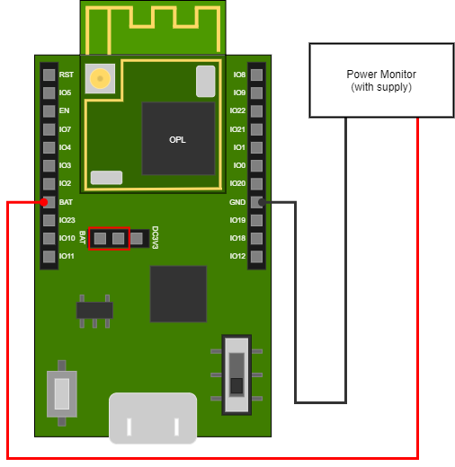
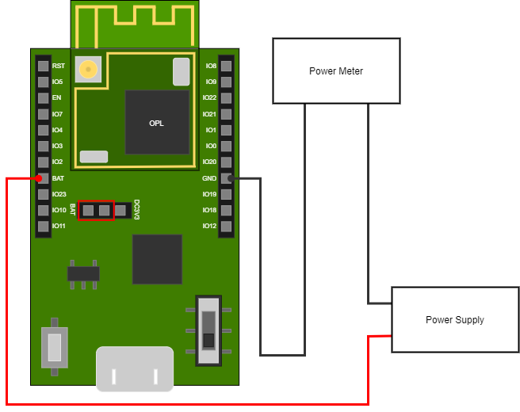
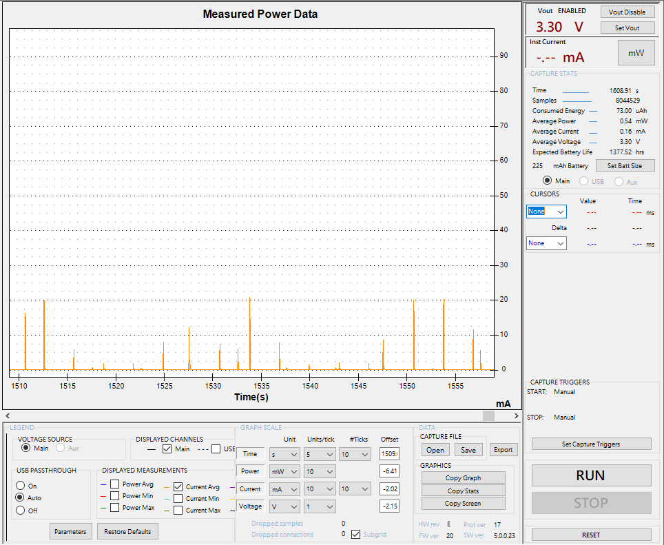
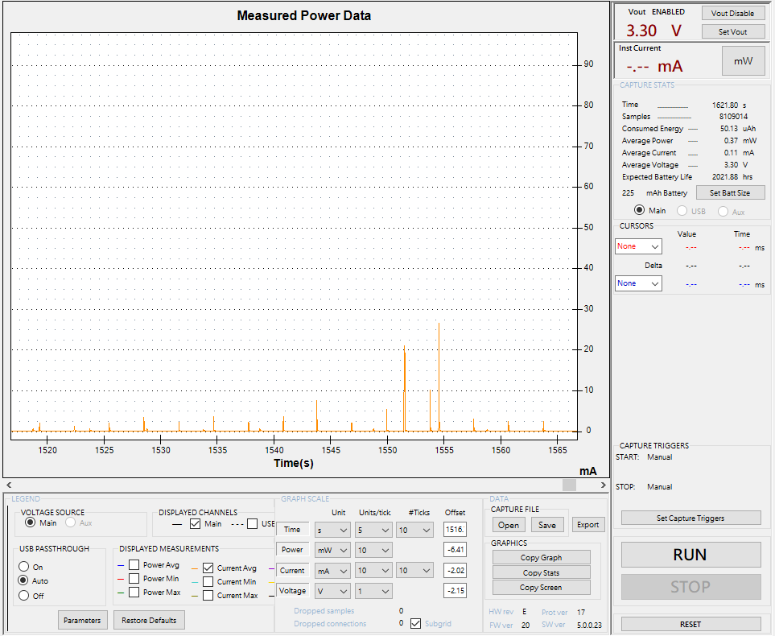
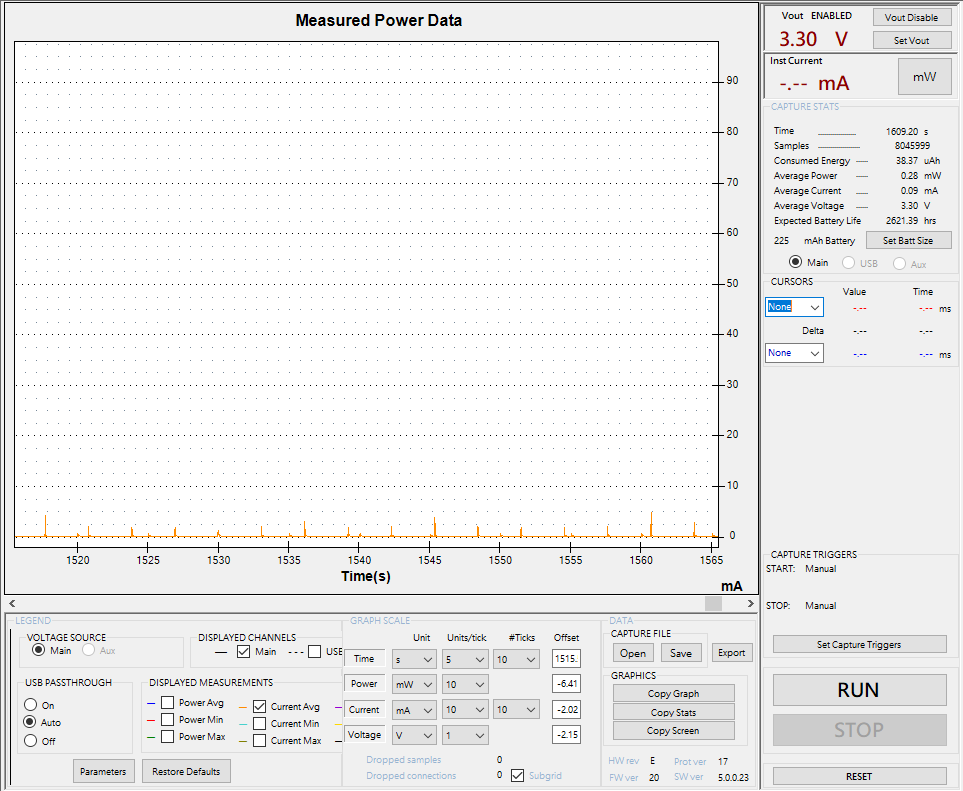

Power Measure
The OPL series chips provide power-saving functions to facilitate the development of more flexible and long-live IoT product.
According to the development document Power-Saving-Introduction, OPL series chips provide the following power-saving types.
- Smart Sleep
- Timer Sleep
- Deep Sleep
Due to the purpose of fast development, the QuickDev-Framework provides a mechanism called Power Mode which is based on Smart Sleep. Developer just set the power mode to configure the product as low-power / balance / performance device.
The following setions descript the mechanism and demonstrate the power measure base on TCP_demo example.
Power Mode
As mentioned in section System Configuration, QuickDev-Framework provides a power mode selection for different application scenarios.
There're 4 types selection that the user can select for different application / product type.
- Low-Power Mode
- Balance Mode
- Performance Mode
- User Define
There are different configurations in each power mode selection, as defined by following parameters.
PS_ENABLED- Smart Sleep enablePS_MAC_LAY_ENABLED- Wi-Fi MAC layer power save enableWM_DTIM_PERIOD_TIME- DTIM period timeWM_AC_RETRY_INTVL_TBL- Wi-Fi auto-connect interval table
Info
The configure of Low-Power Mode, Balance Mode and Performance Mode had been set as a default setup defined in header files located at quick_dev/common/config/ps_config.
Low-Power Mode
The low-power mode configured for a low power consumption and long-live product type, it will be configured as a longer Skip DTIM period, and longer auto-connect interval for decreaseing core wakeup period for saving more power.
To using this type, please configure the selection as following value in qd_config.h.
#ifndef SYS_CFG_PS_MODE
#define SYS_CFG_PS_MODE (0)
#endif
Configuration
Header file -
quick_dev/common/config/ps_config/ps_config_lp.h
Defines -
// <o> PS_ENABLED - smart sleep enable
#ifndef PS_ENABLED
#define PS_ENABLED (1)
#endif
// <o> PS_MAC_LAY_ENABLED - mac layer sleep after got ip
#ifndef PS_MAC_LAY_ENABLED
#define PS_MAC_LAY_ENABLED (1)
#endif
// <o> WM_DTIM_PERIOD_TIME
#ifndef WM_DTIM_PERIOD_TIME
#define WM_DTIM_PERIOD_TIME (3000)
#endif
// <o> WM_AC_RETRY_INTVL_TBL - auto-connect in wifi manager retry interval table (ms)
// <i> modify below array to fit with your needs
#ifndef WM_AC_RETRY_INTVL_TBL
static uint32_t g_u32WmAcRetryIntvlTbl[5] =
{
30000,
30000,
60000,
60000,
900000,
};
#define WM_AC_RETRY_INTVL_TBL (g_u32WmAcRetryIntvlTbl)
#endif
Balance Mode
The balance mode configured for a large battery or a power-line with power supply types product, it would more care about the shorter Skip DTIM period and auto-connect interval, but also had a smart sleep activate on your application.
To using this type, please configure the selection as following value in qd_config.h.
#ifndef SYS_CFG_PS_MODE
#define SYS_CFG_PS_MODE (1)
#endif
Configuration
Header file -
quick_dev/common/config/ps_config/ps_config_bl.h
Defines -
// <o> PS_ENABLED - smart sleep enable
#ifndef PS_ENABLED
#define PS_ENABLED (1)
#endif
// <o> PS_MAC_LAY_ENABLED - mac layer sleep after got ip
#ifndef PS_MAC_LAY_ENABLED
#define PS_MAC_LAY_ENABLED (1)
#endif
// <o> WM_DTIM_PERIOD_TIME
#ifndef WM_DTIM_PERIOD_TIME
#define WM_DTIM_PERIOD_TIME (1000)
#endif
// <o> WM_AC_RETRY_INTVL_TBL - auto-connect in wifi manager retry interval table (ms)
// <i> modify below array to fit with your needs
#ifndef WM_AC_RETRY_INTVL_TBL
static uint32_t g_u32WmAcRetryIntvlTbl[5] =
{
30000,
30000,
30000,
60000,
60000,
};
#define WM_AC_RETRY_INTVL_TBL (g_u32WmAcRetryIntvlTbl)
#endif
Performance Mode
The performance mode configured for power-line with power supply type product, in this type selection the smart sleep will no-longer been activate, it will have a quick and better response of chip.
To using this type, please configure the selection as following value in qd_config.h.
#ifndef SYS_CFG_PS_MODE
#define SYS_CFG_PS_MODE (2)
#endif
Configuration
Header file -
quick_dev/common/config/ps_config/ps_config_pf.h
Defines -
// <o> PS_ENABLED - smart sleep enable
#ifndef PS_ENABLED
#define PS_ENABLED (0)
#endif
// <o> PS_MAC_LAY_ENABLED - mac layer sleep after got ip
#ifndef PS_MAC_LAY_ENABLED
#define PS_MAC_LAY_ENABLED (0)
#endif
// <o> WM_DTIM_PERIOD_TIME
#ifndef WM_DTIM_PERIOD_TIME
#define WM_DTIM_PERIOD_TIME (1000)
#endif
// <o> WM_AC_RETRY_INTVL_TBL - auto-connect in wifi manager retry interval table (ms)
// <i> modify below array to fit with your needs
#ifndef WM_AC_RETRY_INTVL_TBL
static uint32_t g_u32WmAcRetryIntvlTbl[5] =
{
5000,
5000,
5000,
10000,
10000,
};
#define WM_AC_RETRY_INTVL_TBL (g_u32WmAcRetryIntvlTbl)
#endif
User Define
The user-define mode is reserved for developer to configure all the setting items for customized application / product.
To using this type, please configure the selection as following value in qd_config.h.
#ifndef SYS_CFG_PS_MODE
#define SYS_CFG_PS_MODE (3) // or more then 3
#endif
Info
The user-define configuration is below the SYS_CFG_PS_MODE in qd_config.h .
Measuring current consumption
This section demonstrate the steps that how to measure the power consumption on Dev-Kit base on TCP_demo.
Before to check on following document, it's recommend to see the Dev-Kit HDK document to understand the hardware of Dev-Kit.
- OPL1600-A3 Dev-Kit HDK : https://github.com/Opulinks-Tech/OPL1000-HDK
- OPL2500-A0 Dev-Kit HDK : https://github.com/Opulinks-Tech/OPL2500A0-HDK
Wiring the Dev-Kit
On measuring the power consumption, in below diagram shows how to wried the Dev-Kit with your power monitor / power meter, the focusing to setup the Dev-Kit is set the jumper to short the BAT pin and common pin at middle.
- This diagram present the connection with power monitor (supply function included).

- This diagram present the connection with power meter.

Measure with TCP demo example
Please check on TCP demo for more detail of this example.
In following try out will guide you to measure the consumption in different situation.
Note
Before we go, we must set the Power Mode as Low-Power Mode to enable the Smart Sleep.
Situation 1: Periodic post and keep-alive
Switch on the periodic data post and set as 20 sec period time at qd_config.h in tcp_demo example.
// <o> TCP_DEMO_PERI_POST_EN - enable periodic post data
#ifndef TCP_DEMO_PERI_POST_EN
#define TCP_DEMO_PERI_POST_EN (1)
#endif
// <o> TCP_DEMO_PERI_POST_INTERVAL - periodic post data interval time (ms)
#ifndef TCP_DEMO_PERI_POST_INTERVAL
#define TCP_DEMO_PERI_POST_INTERVAL (20000)
#endif
Set keep-alive interval as 120 sec at cloud_config.h locate in quick_dev/app_ref/cloud/tcp_cloud.
// keep alive time : set 0 will disable the keep alive behavior
#ifndef CLOUD_KEEP_ALIVE_TIME
#define CLOUD_KEEP_ALIVE_TIME (120000) //ms
#endif
Then save and compiler the code, and download the binary into the device. After finish, open the TCP server with local network on your PC, the device will connect to server while the Network Up event indicate.
When connected, the device will start periodic posting data to server and also trigger keep-alive message every 120 sec.
In following screenshot, the consumption result of test arround 25min is near 0.16~0.18mA avg. in periodic data post and keep alive.

Situation 2: Only keep-alive
Base on situation 1 and only switch off the periodic data post at qd_config.h in tcp_demo example.
// <o> TCP_DEMO_PERI_POST_EN - enable periodic post data
#ifndef TCP_DEMO_PERI_POST_EN
#define TCP_DEMO_PERI_POST_EN (0)
#endif
Follow the steps after the code changed at situation 1.
When connected, the device will only trigger keep-alive message every 120 sec.
In following screenshot, the consumption result of test arround 25min is near 0.11~0.13mA avg. in only keep alive.

Situation 3: Idle
Base on situation 2, we had close the periodic data post, now we try to disable the keep-alive interval to make the device only in TCP connected status but without any behavior.
Set the keep-alive interval time as 0 to disable the keep-alive function at cloud_config.h locate in quick_dev/app_ref/cloud/tcp_cloud.
// keep alive time : set 0 will disable the keep alive behavior
#ifndef CLOUD_KEEP_ALIVE_TIME
#define CLOUD_KEEP_ALIVE_TIME (0) //ms
#endif
Follow the steps after the code changed at situation 1.
When connected, the device won't take any behavior and stay at idle status.
In following screenshot, the consumption result of test arround 25min is near 0.09~0.10mA avg. in idle without any activity.

On top situations, we'll get different average power consumption, and now on you can get the current by measuring in different examples or your application.